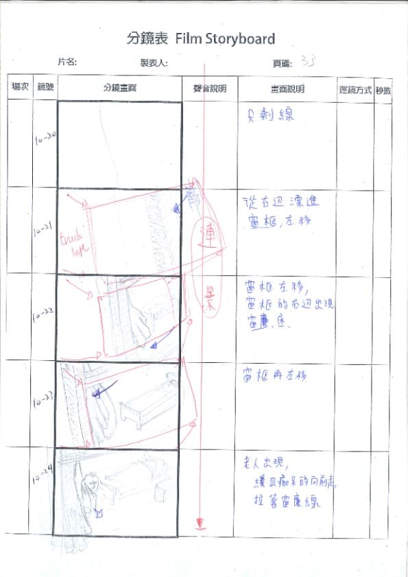
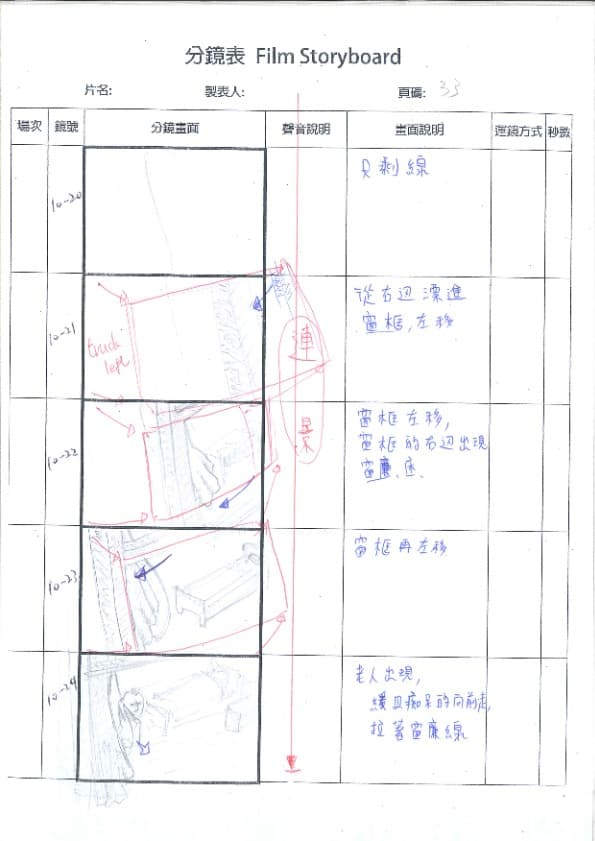

融合了2D與3D的動畫是我一開始製作這個作品的動機。 為了要讓2D角色搭配3D場境，我們嘗試了各種工具，最終我們減少建模的面數並運把UV畫的顏色用一單色的方式呈現，讓畫面更乾淨。這種方式不只讓我們畫面更貼合2D角色，更讓我們算圖速度更快。

Director
Screenwriter
Key-animetor
Inbetweener
Editer
Sketch Up
PhotoShop
Illusturator
Maya
Premiere
After Effect
3/2016
該作品為我畢業製作的專題作品，主要是以2D角色搭配3D場景來呈現。
故事的主旨是以老人癡呆為發想，敘述一位老人藉由在家裡的不同地方遊走卻幻想成在冒險。
這個故事的啟發來自於我奶奶，她並不是一位老年癡呆的患者，但由於當時年近百歲，身體與記憶慢慢老化而常會使她產生一些時空錯亂的對話，更有時會對著我叫我爸的名字等。
融合了2D與3D的動畫是我一開始製作這個作品的動機。 為了要讓2D角色搭配3D場境，我們嘗試了各種工具，最終我們減少建模的面數並運把UV畫的顏色用一單色的方式呈現，讓畫面更乾淨。這種方式不只讓我們畫面更貼合2D角色，更讓我們算圖速度更快。
所有的角色接式環繞者主角去繪製，以他會遇到的每件事情去創造，每個角色也都需要換至兩個版本，一為主角想像中的樣貌，另一個為現實中的樣貌，就像是小孩就是老人、怪獸是蟑螂、狒狒是主角的兒子等。
這個作品要穿梭在現實與虛幻之間，也是我致敬於一位傳奇的日本動畫導演 - 今敏，他擅長運用各種神奇且讓人難以辨識真偽的轉場鏡頭，讓觀眾不斷抽離。因此我也直接運用這種虛實穿插的方式去處理後段老人逐漸清醒的橋段，也是希望能讓觀眾的眼睛能為之一亮。當然也更是安排了非常多彩蛋與線索在其中，讓各位去發覺。

 



展覽前，我發現應該要做一些有趣的周邊來豐富我的展覽，因此我製作了翻頁動畫書與各式書籤以及特製明信片等實體商品。